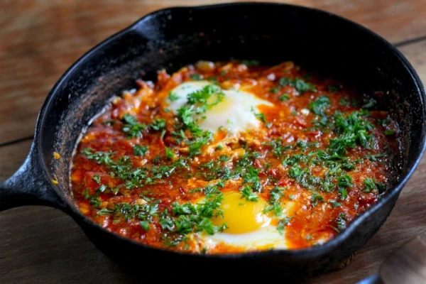

Only Recipes
to matter

Shakshouka
Shakshouka is a Middle Eastern dish of tomatoes, eggs, onions, pepper and various spices.
It's fast and simple to cook, making it the perfect breakfast.
- 3 tablespoons of Olive oil
- 1 chopped Onion
- 1 thinly sliced Bell Pepper
- 2 cloves of minced Garlic
- 2 cups of chopped Tomatoes
- 1 finely chopped Chili Pepper
- 1 teaspoon of ground Cumin
- 1 teaspoon of Paprika
- 3 Eggs
- Heat Olive oil in a pan, over medium heat. Stir in Onion, Bell Pepper and Garlic.
- Cook and stir until vegetables have softened and the Onion has caramelized, about 5 minutes.
- Mix together Tomatoes, Chili Pepper, Cumin, Paprika and Salt in a bowl.
- Stir Tomato mixture into the Onion mixture. Simmer for 10 minutes.
- Crack the eggs into the pan. Cook for 5 minutes.
Back